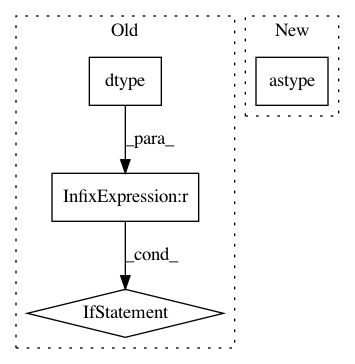

449ce796e6f506a28075f16099c986e298141569,pynets/nodemaker.py,,gen_network_parcels,#Any#Any#Any#Any#,288
Before Change
def gen_network_parcels(parlistfile, network, labels, dir_path):
bna_img = nib.load(parlistfile)
if bna_img.get_data_dtype() != np.dtype(np.int):
bna_data_for_coords = bna_img.get_data()
// Number of parcels:
par_max = np.ceil(np.max(bna_data_for_coords)).astype("int")
else:
bna_data = bna_img.get_data()
par_max = np.max(bna_data)
img_stack = []
////Set indices
for idx in range(1, par_max+1):
roi_img = bna_data == idx
After Change
roi_img = bna_data == bna_data_for_coords_uniq[idx].astype("int16")
roi_img = roi_img.astype("int16")
img_stack.append(roi_img)
img_stack = np.array(img_stack).astype("int16")
img_list = []
for idy in range(par_max):
roi_img_nifti = new_img_like(bna_img, img_stack[idy])
img_list.append(roi_img_nifti)
In pattern: SUPERPATTERN
Frequency: 3
Non-data size: 4
Instances
Project Name: dPys/PyNets
Commit Name: 449ce796e6f506a28075f16099c986e298141569
Time: 2017-11-12
Author: dpisner@utexas.edu
File Name: pynets/nodemaker.py
Class Name:
Method Name: gen_network_parcels
Project Name: dmlc/gluon-nlp
Commit Name: 8e84bd1c5a4cd0e61ee67abc532ab692e5335914
Time: 2020-12-10
Author: xshiab@connect.ust.hk
File Name: src/gluonnlp/attention_cell.py
Class Name:
Method Name: masked_softmax
Project Name: dPys/PyNets
Commit Name: 449ce796e6f506a28075f16099c986e298141569
Time: 2017-11-12
Author: dpisner@utexas.edu
File Name: pynets/nodemaker.py
Class Name:
Method Name: get_names_and_coords_of_parcels